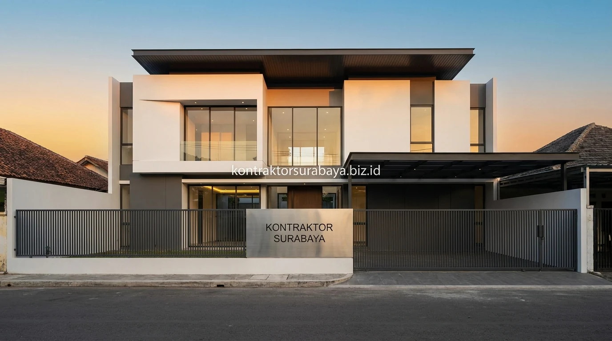

Memilih jasa bangun rumah membutuhkan pertimbangan matang berdasarkan portofolio nyata yang telah selesai dikerjakan, bukan semata gambar 3D render konseptual. Sebagai referensi Anda dalam merencanakan pembangunan hunian di Surabaya, Sidoarjo, dan sekitarnya, berikut adalah 7 contoh studi kasus rumah minimalis modern hasil pembangunan tim Kontraktor Surabaya.
1. Rumah Dua Lantai di Lahan Sempit dengan Void Tengah
Void di tengah rumah membantu udara panas naik dan keluar secara alami, sementara tangga terbuka di sekitarnya tetap menjaga cahaya tembus hingga lantai bawah.
Void ini menjadi jalur sirkulasi udara panas dari lantai bawah ke atas, dipadukan dengan tangga terbuka tanpa dinding masif agar cahaya tetap menembus ke ruang bawah. Kombinasi ini menjadi solusi umum untuk kavling dengan lebar tanah terbatas (seperti 5x12 m atau 6x15 m) yang banyak ditemukan di kawasan padat Surabaya.
2. Rumah Satu Lantai dengan Taman Dalam (Courtyard)
Courtyard kecil di tengah rumah memberi sumber cahaya dan udara segar bagi ruang makan dan kamar tidur utama tanpa mengorbankan privasi dari luar.
Rumah satu lantai dengan courtyard kecil menjadi pilihan ideal bagi keluarga yang menghindari tangga atau merencanakan hunian ramah lansia. Area terbuka ini biasanya diisi tanaman rendah perawatan dan menjadi titik pusat sirkulasi udara sekaligus sumber cahaya bagi ruang-ruang di sekitarnya.

3. Renovasi Rumah Lama menjadi Fasad Minimalis Modern
Perubahan model atap, pelapisan ulang dinding eksterior, dan penataan ulang jendela dapat memperbarui tampilan rumah lama tanpa membongkar struktur utama.
- Model Atap Baru: Atap pelana atau miring tersembunyi diganti untuk mengubah kesan visual tanpa mengganggu struktur pondasi dasar.
- Pelapisan Dinding (Wall Cladding): Dinding eksterior dilapis ulang menggunakan kombinasi acian halus, cat weatherproof, dan aksen panel kayu WPC untuk tampilan yang lebih bersih dan modern.
- Optimalisasi Bukaan: Posisi dan ukuran jendela ditata ulang agar pencahayaan alami lebih optimal dan fasad tampak lebih proporsional.
4. Apa Saja Tahapan yang Dilalui dari Desain hingga Rumah Siap Huni?
Setiap proyek rumah tinggal melewati lima tahapan kerja terstruktur untuk memastikan kualitas dan kepastian biaya:
- Konsultasi Awal & Survey Lokasi: Menentukan kebutuhan ruang, batas lahan riil, dan bujet anggaran klien.
- Penyusunan Desain & RAB: Desain arsitektur dan RAB itemized disusun bersamaan agar biaya sesuai konsep yang dipilih.
- Pengurusan Legalitas & Perizinan: Dokumen teknis dan izin PBG diproses sebelum konstruksi fisik dimulai.
- Konstruksi Fisik Bertahap: Pengawasan mutu berkala dilakukan oleh insinyur sipil dengan laporan progres foto/video mingguan.
- Testing & Serah Terima Kunci: Uji fungsi instalasi kelistrikan/air dan serah terima BAST disertai sertifikat garansi resmi.
5. Faktor yang Membedakan Hasil Bangunan Berkualitas dari Segi Konstruksi
Campuran beton yang tepat, pengawasan material di lapangan, dan detail finishing yang presisi menjadi pembeda utama rumah yang tetap kokoh dalam jangka panjang.
- Kualitas Mutu Beton: Campuran beton bertulang yang sesuai standar SNI menjaga kekuatan struktur terhadap getaran dan beban lantai 2.
- Pengawasan Material On-Site: Kontrol kualitas material di lapangan mencegah penggunaan bahan di bawah spesifikasi teknis SPK.
- Presisi Finishing: Kerapian plester aci, ketepatan nat keramik granit, dan pengecatan berlapis memengaruhi estetika dan daya tahan bangunan.
6. Rumah dengan Adaptasi Lahan Berkontur atau Tidak Beraturan
Penyesuaian denah dan jenis pondasi khusus memungkinkan lahan berkontur miring atau bentuk tanah tidak beraturan (trapesium/lahan tusuk sate) tetap dibangun secara kokoh dan efisien.
Denah disusun mengikuti bentuk aktual lahan, bukan dipaksakan mengikuti pola standar kotak, sementara jenis pondasi dipilih berdasarkan kondisi daya dukung tanah dan elevasi jalan. Pendekatan ini membuat efisiensi ruang tetap terjaga maksimal meski kondisi lahan awal tidak ideal.
7. Rumah dengan Ruang Usaha di Bagian Depan (Rumah Toko Kecil)
Area depan didesain sebagai ruang usaha dengan akses terpisah dari pintu utama keluarga, sehingga aktivitas komersial tidak mengganggu privasi ruang tinggal.
Tipe ini sangat diminati oleh klien di kawasan Surabaya yang membutuhkan hunian sekaligus tempat usaha kecil (seperti kantor konsultan, klinik, studio foto, atau cafe rumahan). Akses usaha dan pintu masuk keluarga dipisahkan secara cerdas, sehingga area belakang tetap bisa difungsikan sepenuhnya sebagai zona tinggal yang tenang dan privat.
"Melihat portofolio nyata yang telah selesai dibangun memberikan kepastian mutu dan ketenangan batin sebelum Anda mempercayakan investasi pembangunan rumah keluarga."
Setiap contoh studi kasus di atas mencerminkan pendekatan desain dan teknis yang disesuaikan dengan kondisi lahan dan kebutuhan masing-masing klien di seluruh wilayah layanan kami: Surabaya, Sidoarjo, Gresik, Mojokerto, hingga Madura.
Lihat dokumentasi hasil proyek lebih lengkap pada galeri proyek kami, atau pelajari alur kerja sama pembangunan rumah pada halaman jasa kontraktor rumah Surabaya.